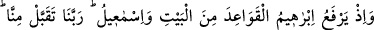
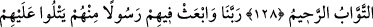
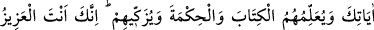
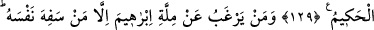
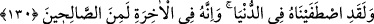
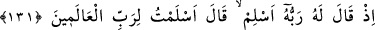
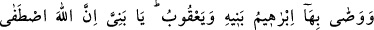
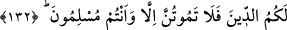

HZ. İBRÂHİM VE
KÂBE’NİN İNŞÂSI
127. Bir zamanlar İbrâhîm, İsmâîl ile beraber Beytullah’ın temellerini
yükseltiyor, (şöyle diyorlardı:) Ey Rabbimiz! Bizden bunu kabûl buyur; şüphesiz
sen işitensin, bilensin.
128. Ey Rabbimiz! bizi sana boyun eğenlerden kıl, neslimizden de sana itaat eden
bir ümmet çıkar, bize ibâdet usûllerimizi göster, tevbemizi kabûl et; zirâ, tevbeleri
çokça kabûl eden, çok merhametli olan ancak sensin.
129. Ey Rabbimiz! Onlara, içlerinden senin âyetlerini kendilerine okuyacak,
onlara kitap ve hikmeti öğretecek, onları temizleyecek bir peygamber gönder.
Çünkü üstün gelen, her şeyi yerli yerince yapan yalnız sensin.
130. İbrâhîm’in dîninden kendini bilmezlerden başka kim yüz çevirir? Andolsun
ki, biz onu dünyâda (elçi) seçtik, şüphesiz o âhırette de sâlihlerden (iyilerden)dir.
131. Çünkü Rabbi ona: Müslüman ol, demiş, o da: Âlemlerin Rabbine boyun
eğdim, demişti.
132. Bunu İbrâhîm de kendi oğullarına vasiyet etti, Ya’kûb da: Oğullarım! Allah
sizin için bu dîni (İslâm’ı) seçti. O halde sadece müslümanlar olarak ölünüz (dedi).
“Hani İbrâhîm O Beyt’in temellerini İsmâîl’le birlikte yükseltiyordu da...” Bu
geçmiş hâlin hikâyesidir. Kur’ân’ın indiği zamandan çok önce olan yükseltme, sanki
vahyin indiği anda olmuş gibi takdîr edilerek muzâri (geniş zaman) kipiyle ifâde